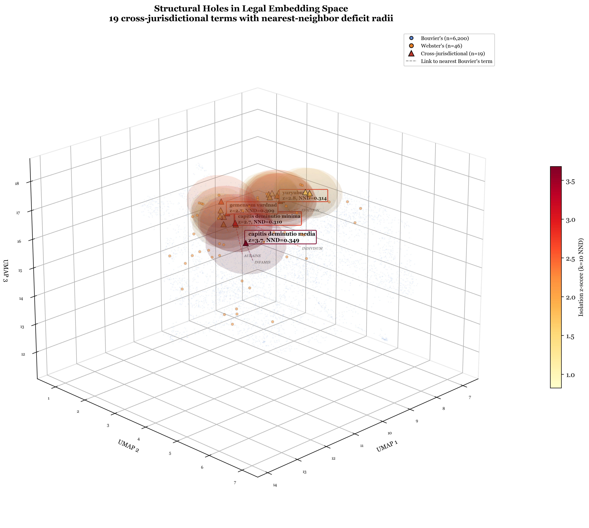
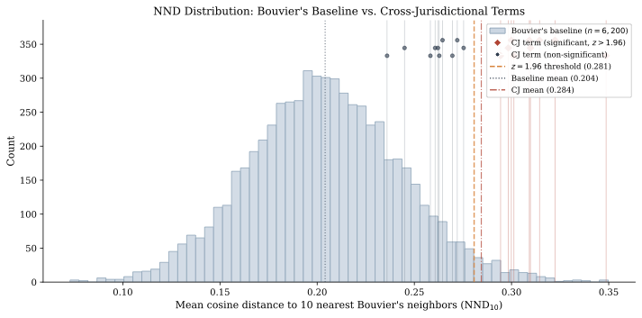
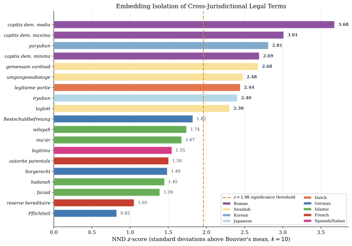

Abstract
We identify structural holes in legal embedding spaces: regions where concepts exist in non-English legal traditions but have no corresponding terms — and therefore no nearby embedding vectors — in English. Using 6,200 terms from Bouvier's Law Dictionary and 19 cross-jurisdictional terms with no English equivalent, we show that these absent terms (Pflichtteil, umgängessabotage, mu'sir, capitis deminutio minima) occupy geometrically isolated regions with measurably fewer English-language neighbors than expected (Cohen's d = 2.05, Mann-Whitney p < 10−11). We propose this as a vector-space analogue of the weak Sapir-Whorf hypothesis: if a language lacks a word for a concept, the embedding space trained on that language provides sparse coverage of the corresponding semantic region, and retrieval systems operating in that language struggle to find what they have no word for. The structural holes in English legal embeddings correspond to legal protections absent from common-law systems: children's compulsory inheritance (no Pflichtteil), contact sabotage recognition (no umgängessabotage), debtor respite (no mu'sir), and graduated status reduction (no capitis deminutio minima). The absence of the word correlates with the absence of the protection, and both manifest as measurable geometric isolation.
Key Findings
- Cross-jurisdictional legal terms are geometrically isolated in English embedding space with an effect size of Cohen's d = 2.05 — more than twice the “large” threshold. Mann-Whitney p < 10−11.
- 9 of 19 terms (47.4%) showed statistically significant isolation at z > 1.96, led by capitis deminutio media (z = 3.68), capitis deminutio maxima (z = 3.01), and yuryubun (z = 2.81).
- Vector-space Sapir-Whorf: If a language lacks a word for a concept, embedding models trained on that language provide sparse coverage in the corresponding semantic region. Retrieval systems cannot find what they cannot name.
- The structural holes correspond to absent legal protections in common-law systems: children's compulsory inheritance, contact-sabotage recognition, debtor respite, and graduated status reduction.
- Cognitive friction scores from the legal word database correlate with embedding isolation: terms maximally unfamiliar to English speakers have the fewest English-language neighbors.
Most Isolated Cross-Jurisdictional Terms
| Term | Tradition | z-score | Percentile |
|---|---|---|---|
| capitis deminutio media | Roman | 3.68 | 100.0th |
| capitis deminutio maxima | Roman | 3.01 | 99.8th |
| yuryubun | Korean | 2.81 | 99.6th |
| capitis deminutio minima | Roman | 2.69 | 99.5th |
| gemensam vårdnad | Swedish | 2.68 | 99.5th |
| umgängessabotage | Swedish | 2.48 | 99.0th |
| legitieme portie | Dutch | 2.44 | 98.9th |
| iryubun | Japanese | 2.40 | 98.8th |
| laglott | Swedish | 2.30 | 98.6th |
Figures

3D structural holes. Cross-jurisdictional terms (red) occupy isolated regions far from the dense clusters of English legal vocabulary (blue). The void regions are structural holes.

NND distribution. Nearest-neighbor distances for cross-jurisdictional terms (orange) vs. Bouvier's baseline (blue). The distributions barely overlap (Cohen's d = 2.05).

NND z-scores. Isolation deficit for each cross-jurisdictional term. Terms above the dashed line (z = 1.96) are statistically significantly isolated.
Citation
BibTeX
@article{thorarinson2026structural,
title={Structural Holes in Legal Embedding Spaces: How Missing Words Create Missing Protections},
author={Thorarinson, Joel},
year={2026},
month={June},
pages={1--13},
note={arXiv preprint (forthcoming)},
keywords={structural holes, legal embeddings, Sapir-Whorf, cross-jurisdictional, lexical gaps}
}
APA
Thorarinson, J. (2026). Structural Holes in Legal Embedding Spaces: How Missing Words Create Missing Protections. arXiv preprint (forthcoming).
Authors
Keywords
structural holes
legal embeddings
Sapir-Whorf
cross-jurisdictional
Pflichtteil
lexical gaps
comparative law
embedding geometry
legal NLP
nearest-neighbor deficit
Related Papers